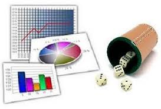

La **probabilidad y la estadística** son ramas fundamentales de las matemáticas que estudian los fenómenos aleatorios y el análisis de datos. La **probabilidad** es la disciplina que mide la posibilidad de que ocurra un evento. Se encarga de cuantificar la incertidumbre. Su valor se expresa con un número entre 0 y 1. Un valor de 0 indica que el evento es imposible. Un valor de 1 indica que el evento es seguro. Se basa en el estudio de experimentos aleatorios. Un experimento aleatorio es aquel cuyo resultado no puede predecirse con certeza. La probabilidad clásica se define como casos favorables entre casos posibles. También existe la probabilidad frecuentista. Esta se basa en la frecuencia relativa de un evento en muchos ensayos. La probabilidad subjetiva depende del juicio o creencia personal. Los eventos pueden ser simples o compuestos. Pueden ser independientes o dependientes. Se utilizan reglas como la regla de la suma. También la regla del producto. El teorema de Bayes es fundamental en probabilidad. Permite actualizar probabilidades con nueva información. La **estadística** es la ciencia que recopila, organiza, analiza e interpreta datos. Se utiliza para tomar decisiones en condiciones de incertidumbre. Se divide en estadística descriptiva e inferencial. La estadística descriptiva resume datos mediante tablas y gráficos. También utiliza medidas como la media. La mediana y la moda son medidas de tendencia central. La varianza y la desviación estándar miden la dispersión. La estadística inferencial permite sacar conclusiones sobre una población. Se basa en el estudio de muestras. Utiliza estimaciones y pruebas de hipótesis. El intervalo de confianza es una herramienta importante. El muestreo puede ser aleatorio o no aleatorio. La estadística se aplica en economía. También en medicina. En ingeniería y ciencias sociales. Es clave en la investigación científica. Permite analizar riesgos y predecir comportamientos. La probabilidad y la estadística están estrechamente relacionadas. Ambas permiten comprender fenómenos inciertos. Son esenciales en el análisis de datos modernos. Referencias Bertsekas, D. P., & Tsitsiklis, J. N. (2002). *Introduction to probability*. Athena Scientific. Devore, J. L. (2015). *Probability and statistics for engineering and the sciences* (9th ed.). Cengage Learning. Triola, M. F. (2018). *Estadística* (12.ª ed.). Pearson.
